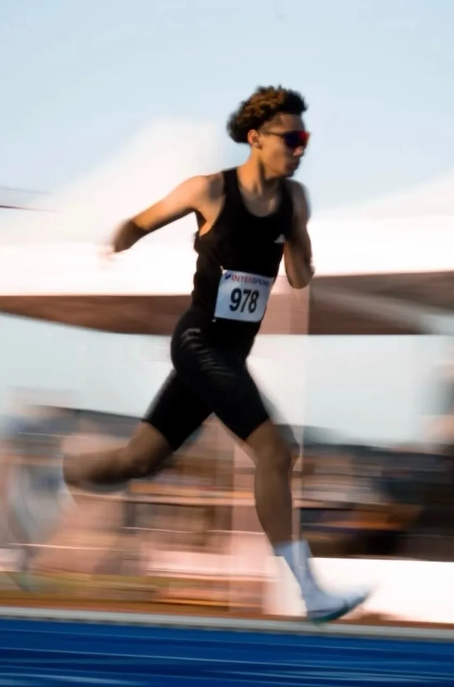
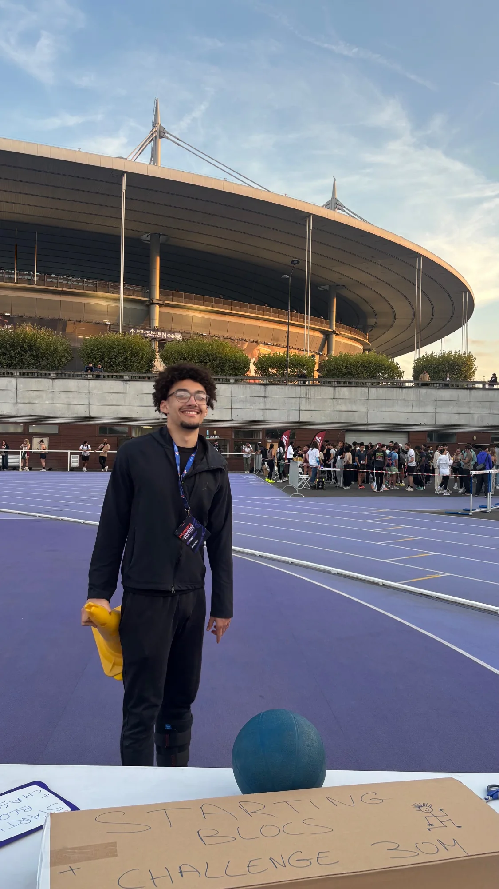

FORCE. ENDURANCE.
VITESSE. PUISSANCE.
Une approche fondée sur la pratique, l'apprentissage en STAPS, les connaissances scientifiques et l'expérience du terrain.
Ma philosophie : la discipline, la régularité, la patience, le travail et la foi. Ce sont les vraies clés — bien avant n'importe quel programme.

Victor Castillo
Étudiant en L2 STAPS
Entraînement sportif — Paris Cité
Étudiant en L2 STAPS
Entraînement sportif — Paris Cité
DEPUIS 2026
21 personnes coachées
Sportifs accompagnés individuellement depuis le début de l'aventure Hybride Coaching.
CHOISIS TON OBJECTIF
PROGRAMMES
Les contenus détaillés et les prix seront finalisés avant l'ouverture des ventes. Aucun paiement n'est encore activé.




05COURSE À PIED
COURSE À PIED
COACHING PERSONNALISÉ
2 mois · 30 €Du 5 km au marathonSuivi annuel · saison complèteSur route uniquement · pas de coaching sur piste
COACHING COURSE À PIED
MA PHILOSOPHIE D'ENTRAÎNEMENT
Un accompagnement construit sur une saison entière, pas sur un programme générique.
01
Une saison complète
Le suivi peut couvrir toute une année sportive. On construit sur la durée, avec des cycles qui s'enchaînent au lieu de repartir de zéro.
02
Hiver : volume
En hiver, on construit la base aérobie : plus de volume, des allures faciles, un travail d'endurance qui prépare le reste de la saison.
03
Été : qualité
En été, le volume baisse et la qualité monte : allures plus rapides, travail de vitesse et d'explosivité, pour être complet.
04
Mes points forts d'abord
Je travaille d'abord ce que tu fais déjà bien. Un point fort solidifié devient une arme, et tire le reste vers le haut.
05
Volume adapté au niveau
Selon ton niveau et ton emploi du temps, le nombre de séances par semaine varie de 3 à 6. Jamais moins de 3, jamais plus de 6.
06
Entraînement croisé
Vélo et musculation ajoutent du volume sans ajouter de fatigue excessive ni de risque de blessure. La musculation sert aussi à prévenir les blessures.
07
Décharge toutes les 4 semaines
Toutes les 4 semaines, une semaine allégée pour assimiler le travail et éviter la stagnation.
08
Double projet possible
On peut viser plusieurs distances dans la même saison : par exemple un 10 km et un semi, chacun avec sa préparation spécifique.
EXEMPLE RÉEL
Comment ça s'est passé pour Fabio
Un exemple concret d'organisation sur une saison, avec ses contraintes de vie et son emploi du temps.
La semaine
Deux séances de course en période générale, trois en période proche de compétition, deux en affûtage. Deux à trois séances de musculation, plus une sortie vélo le week-end quand c'était possible.
Le volume
15 km par semaine au départ, jusqu'à 30 km maximum. Une progression très graduelle, sans forcer.
Les objectifs
Des cycles enchaînés, avec une course environ tous les deux mois. De quoi rester motivé sans s'épuiser.
L'affûtage
Avant une course : moins de musculation, plus de travail spécifique, même volume mais plus de qualité, pour être prêt le jour J.
Chaque plan est construit sur mesure. Cet exemple montre une organisation possible, pas un modèle à reproduire à l'identique.
AVIS CLIENTS
CE QU'ILS EN DISENT
Témoignages publiés avec l'accord des personnes concernées.
★★★★★4,8 / 5sur 12 avis vérifiés
Note moyenne calculée à partir des retours reçus depuis 2026.
« Le suivi course à pied m'a fait progresser sur route sans me griller. Le plan s'adaptait vraiment à mon emploi du temps. »
« Je cours depuis des années, mais j'ai vraiment progressé quand on a structuré mes séances. Le suivi est sérieux et adapté. »
« Un entraînement intense et exigeant, mais qui vaut clairement le coup. On progresse et on comprend pourquoi. »
PREUVES À L'APPUI
LA PROGRESSION
Des progressions réelles, avec le contexte. Les résultats varient selon le profil, l'assiduité et la récupération.
70 → 125 kgDéveloppé couchéVictor, 19 ans · progression 2023-2026
U15 D1 → U17 R2Évolution basketSteve, 18 ans · 2022 → 2023
27 → 22 min (5 km)
54 → 48 min 36 (10 km)Course à pied · progression sur routeFabio, 53 ans
54 → 48 min 36 (10 km)Course à pied · progression sur routeFabio, 53 ans
35 → 29 minCourse à pied · 5 km sur routeValentine, 24 ans · en 3 mois
Données publiées avec l'accord des personnes concernées. Les progressions dépendent du point de départ, de la régularité et du contexte individuel.

L'ATHLÈTE DERRIÈRE LA MÉTHODE
VICTOR CASTILLO
J'ai 19 ans. Étudiant en L2 STAPS, mention Entraînement sportif, à Paris Cité, je construis une approche qui associe les connaissances scientifiques, l'apprentissage universitaire et l'expérience pratique du terrain.
J'ai commencé la musculation seul, sans club, parce qu'un athlète doit toujours travailler son corps : c'est la machine qui fait performer, dans n'importe quel sport.
Ancien basketteur compétitif jusqu'au niveau national dans les catégories jeunes U15 et U18, avec des sélections départementales, je suis aujourd'hui athlète de demi-fond. J'ai pratiqué plus de 9 sports à différents niveaux : basket, athlétisme, natation, rugby, football, judo, tennis, vélo, musculation et course à pied. Trois d'entre eux au niveau régional, et des médailles départementales en judo (champion et 3e de Seine-et-Marne).
Je participe aussi à l'encadrement de jeunes athlètes sur les disciplines de course, de saut et de lancer.
J'entraîne depuis 2022, d'abord mon entourage et mes amis, puis ma famille, et aujourd'hui des sportifs rencontrés sur les réseaux. Le sport est au centre de ma vie depuis l'âge de 5-6 ans : c'est devenu une évidence, et c'est ce que je veux transmettre.
En parallèle, je crée du contenu sur les réseaux sociaux depuis 2023 : plus de 3 millions de vues cumulées, plus de 2 000 abonnés, et un partenariat avec une marque de nutrition sportive.
La foi en Dieu accompagne mon cheminement et ma vision de la progression.
PARTENAIRE
PROZIS
Équipement et compléments via mon lien partenaire.
Lien affilié : je peux recevoir une commission sur les achats, sans coût supplémentaire pour toi.
OUTILS GRATUITS
CALCULATEURS
Estimations indicatives : elles ne remplacent ni une évaluation individuelle ni un test physiologique.
Calculateur de 1RM
Calculateur d'allure
PARLONS DE TON OBJECTIF
CONTACT
Le formulaire sera relié à un service d'envoi avant la mise en ligne. Tu peux déjà me contacter par email ou Instagram.